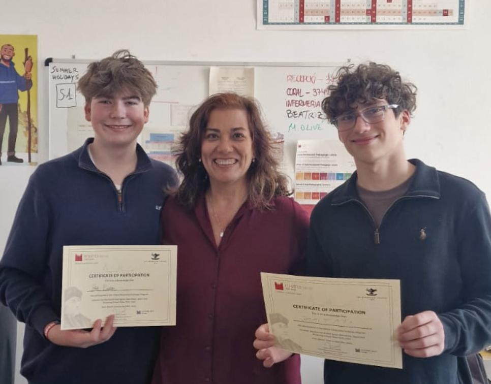
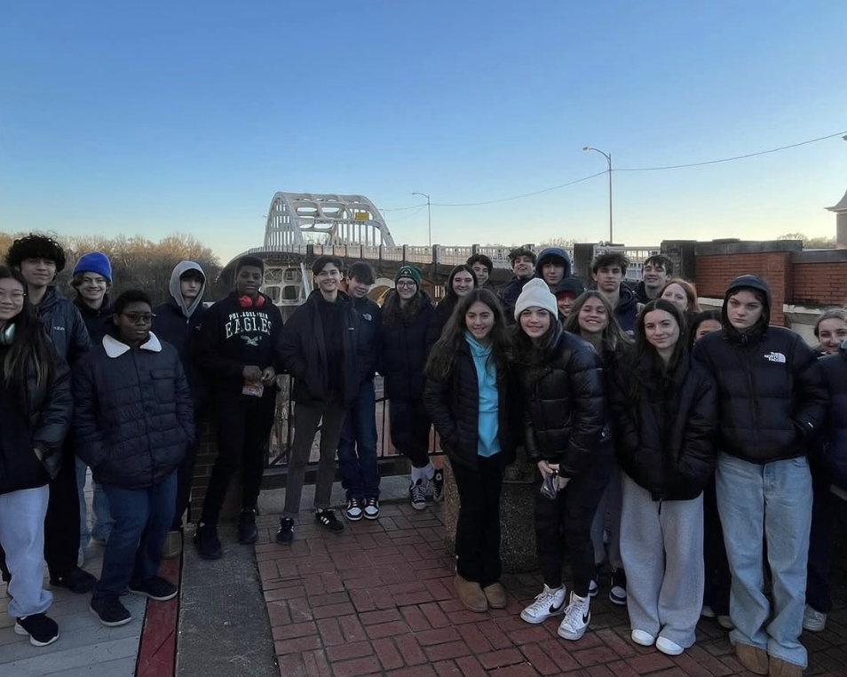
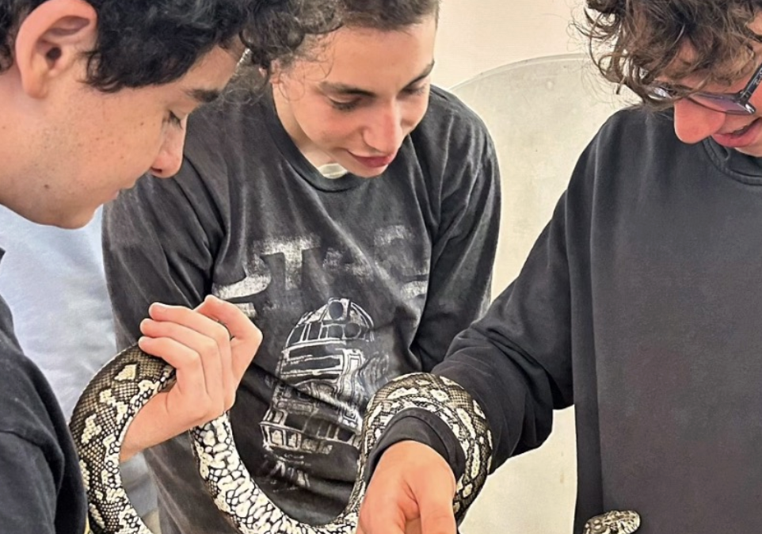
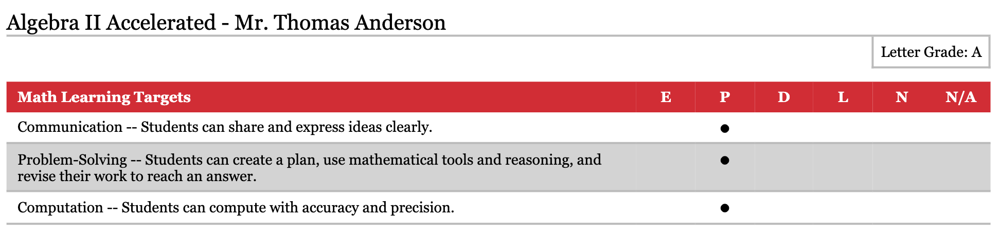

This section will go over all of my qualifications and experiences
- I volunteer at Friendship Circle, a program where we help and connect with people with special needs
- I volunteer regularly at my synagogue in the mornings to pack breakfast for people in need
- I recently went on a Spanish Language Exchange program where I lived in Barcelona for 3 weeks
- I have taken Civil Rights and Social Justice trips with my Synagogue
- I am a key part of the Browning Riley's Way Chapter, and helped organize numorous clothing drives, computer drives, and sandwich making events
- I am a strong student who gets good grades

Spanish Exchange Program
Me receiving my certificate of completion for my exchange program
On my exchange program, I hosted an exchange student for 3 weeks, then flew out to Spain and lived in a village next to Barcelona called Saint Joan Despi. Hosting Xavi, my exchange student, was a unique experience. I not only got to showcase the iconic landmarks of my city, but also showed him the parts of the city that make it a place that I call home, like local restaurants, and my favorite basketball courts. The exchange program helped me realize that I took living in New York City for granted. Every New Yorker has their own connection to the city, and is a member of our thriving community. Flying out to Barcelona was a completely different experience. I was in a completely new city, and had to adapt to my surroundings using my second language. Being far from home challenged me to step out of my comfort zone, and connect with others that I would never have met if I didn’t have this exciting opportunity. I made a lot of friends in Spain through the language of sports. I played numerous soccer games (they take soccer very seriously), and went to the gym with Jordi, one of Xavi’s friends. Stepping out of my comfort zone was a great learning experience, and helped me become more comfortable with taking huge risks.

Civil Rights Trip
Me on my 8th grade Civil Rights Trip to Alabama at the Edmund Pettus Bridge
On my civil rights trip with my synagogue, we went to Alabama, and visited many famous landmarks and monuments. We learned about the civil rights movements, and the brave actions that activists took to step towards equality. We also learned about some of the darker side of American history, such as the KKK, lynching, and segregation. The most impactful part of the trip was visiting 16th Street Baptist Church, a place where 4 African-American girls were murdered in a bombing by the KKK. These girls who were killed were all young children. It was so heartbreaking to learn that story, but it put into perspective how it is important for young students to continue to educate themselves on this time period, so we can remember the legacies of all the people who made sacrifices and lost their lives just because they were different. The darker parts of American history are devastating to hear about, but if we never hear these stories, we risk forgetting the consequences of hatred and injustice, and we lose the opportunity to learn from the past and build a more equal and compassionate future.

Friendship Circle
Me volunteering at Friendship Circle
I volunteer at Friendship Circle because I enjoy helping others and making genuine connections, through my Jewish Identity. Each Sunday, I take part in what is called Sunday Squad, where we connect and do activities with people with special needs. I have been partnered with Yoni for the past 2 years, and every single Sunday he makes my week. While he was shy at first, I got to know him, and now he greets me every Sunday with a smile and a hug. Not only did Yoni make every Sunday a treat for me, he also helped me find the value in helping others and building genuine connections. I didn’t realize the positive impact I had on Yoni’s life until his family invited my family over for dinner, and explained to us all the challenges Yoni has faced, and how Friendship Circle helped him find somewhere where he truly belonged. Because of Friendship Circle, I learned that just being a member of a community, and treating others with kindness (even just smaller acts) really goes a long way.
Confirmation Service
Photo of me at my confirmation service
More information will be added here later.
Grades
Use the arrows to cycle through my first semester sophomore report card. A report that I am incredibly proud of!
